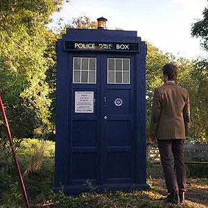
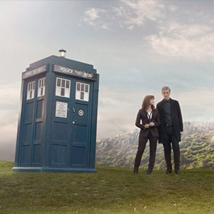
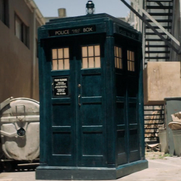

Police Box Disguise
One of the very few things that has remained consistent in Doctor Who is the police box TARDIS exterior.
One of the very few things that has remained consistent in Doctor Who is the police box TARDIS exterior.
The TARDIS is supposed to change appearance wherever it lands to blend in with its surroundings. When the TARDIS landed in a junkyard on Earth it disguised itself as a police box, when the TARDIS next landed in the year 100,000 BC the exterior didn’t change. The Doctor revealed
that the chameleon circuit was broken.
2005 Tardis exterior
2010 Tardis exterior
2014 Tardis exterior
2018 Tardis exterior